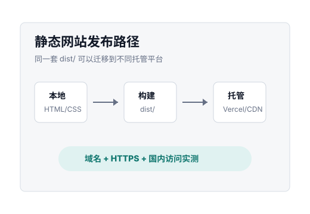

Static site v0.1
个人网站实验站
一个先跑通发布流程的轻量静态站。当前只放个人介绍、项目入口、文章入口和小工具入口，后续可迁移到 Vercel、Cloudflare Pages、阿里云 OSS 或腾讯云 COS。

Projects
项目入口
药品库存记录
本地优先 PWA，用于库存、剩余天数、核对节点和备份，不做医疗建议。
个人学习辅助系统
围绕大学学习、技术学习、兴趣学习和长期知识管理展开。
Vibe Writing
承载博客、方法论、公司内容、会议材料和对外表达。
Resources
讲义下载
数学讲义 · PDF · 6 页 · 约 139 KB
利用和条件分解循环分母
围绕和条件与循环分母展开的数学讲义终稿，可在线阅读或直接下载。
Writing
文章入口
第一版先保留为文章索引。后续可以接入 Markdown、Astro 内容集合或静态生成器；只要最终能输出静态文件，就不影响部署平台迁移。
Tools
小工具入口
静态页面
适合个人介绍、文章、作品集和资源索引。
纯前端工具
适合本地计算、本地存储、导入导出和 PWA。
后端功能
先不做。需要登录、评论或数据库时再单独扩展。
Deployment
部署路线
本地构建
运行构建命令，生成标准静态输出目录。
先上 Vercel
连接 Git 仓库，使用默认 HTTPS 地址快速上线。
国内实测
用手机流量和家庭网络记录可访问性。
迁移国内云
内容稳定后，再处理域名、备案、OSS/COS 和 CDN。